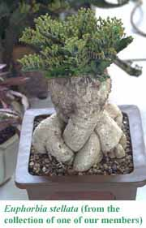

Welcome Visitors!

This section of our web site is set aside especially for visitors who are not members of the Cactus and Succulent Society of San Jose. Click on the links in the banner above for the following:
- About the CSSSJ
- Find out what we're all about, and what our membership enjoys.
- Monthly Meetings
- Read about what you might expect to see or do at our monthly meetings.
- Meeting Location / Directions
- Find out when we meet, and how to get to our meetings.
- Join the CSSSJ!
- Join our club! This page explains how, and includes an online membership application form that you can fill out and submit electronically.
- C & S Care For Beginners
- This special section provides basic cultivation information for people who are new to the hobby of growing cacti and other succulent plants.